Brand guide · v1 · November 2026
How Digital CEO Alex and Faceless Not Boring look, sound and move. Classic art meets a digital business: elevated, warm, a little unhinged in the best way.
01
Digital CEO Alex is the person and the master brand. Faceless Not Boring is her signature promise and the name on her round logo. Together they read: Faceless Not Boring, by Digital CEO Alex.
02
New logo (Ryan, 12 Nov 2026). Primary: The Stack, FACELESS / BORING in heavy capitals with a butter italic "not" cutting through. Secondary: The Signature, the italic "f." for small spaces, profile pictures and the back of the coin. On the site the logo is minted as a gold-edged coin that flips between the two.

For places the round logo doesn't fit (email, PDFs, social bios). Option A is chosen (Ryan, 12 Nov 2026).
03
Taken from her logo and Beacons page (espresso and cream) and her post overlays (butter). Mostly dark and warm; butter is the highlight, used once or twice per screen.
Espresso#221A16 · backgrounds
Espresso Light#2E2420 · panels
Cream#E4D5C5 · logo, buttons, text on dark
Paper#F3EADF · light sections
Butter#F2E3A0 · one highlight word
Taupe#B9A897 · small print, labels
04
Never Helvetica or Arial. Block, funky and modern: condensed heavy capitals with a classic italic serif cutting through, like her post overlays turned up loud.
Headlines are block capitals, tall and tight. One word per headline drops into a lowercase Instrument Serif italic, and one word goes Butter. That clash is the brand.
Clean, friendly and easy on a phone. Used for paragraphs, buttons and prices.
Free resources · The shop
05
Confident, funny, honest about the messy middle. Elevated look, unfiltered words. She talks like a friend who has done it, not a guru.
06
Two worlds: classic paintings and her own photos. Big warped type sits low and never covers a face.
one touch born ready,
born ready,
Sample lines on the painting tiles are placeholders for layout; she writes her own.
07